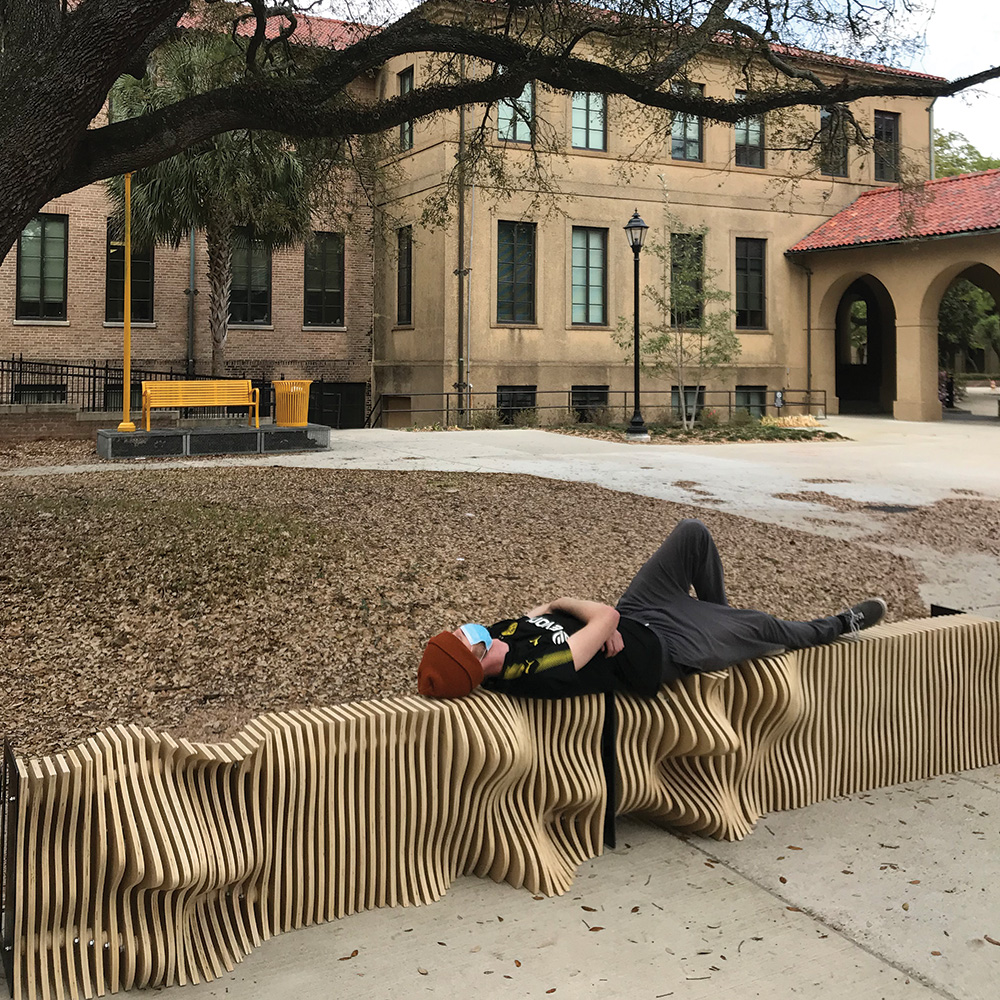

In Fall 2020, a parametric bench was designed digitally by me and two other faculty of Louisiana State University (LSU). The project titled “Waveform Bench” was installed permanently in the main hall of design building at LSU college of Art and Design. The bench was digitally fabricated using CNC router and plasma cutter. It represents the waveform of three lines of the poet Diamonds in Dystopia by Vincent Cellucci: irrigating minds the one prototype for change more giving systems
Computational Design
Parametric Bench